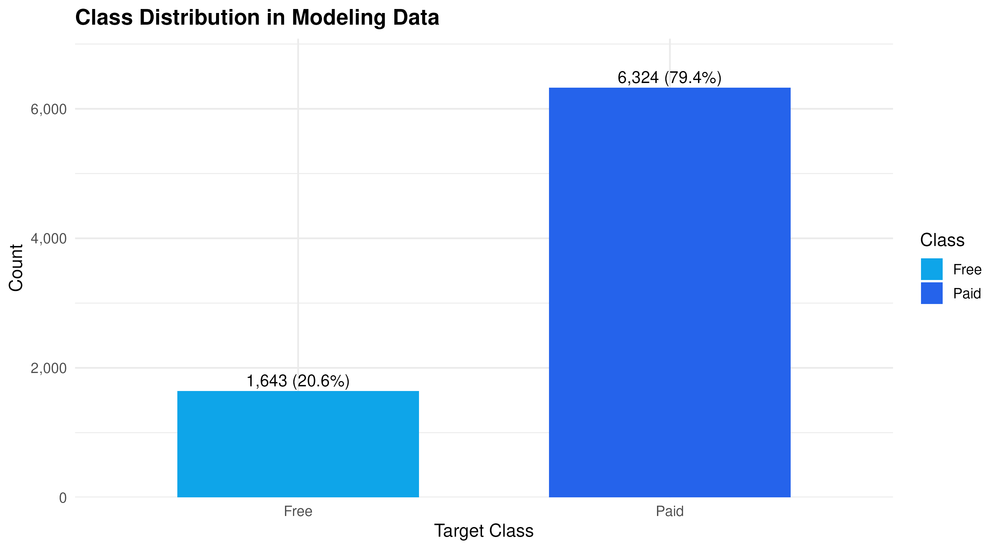
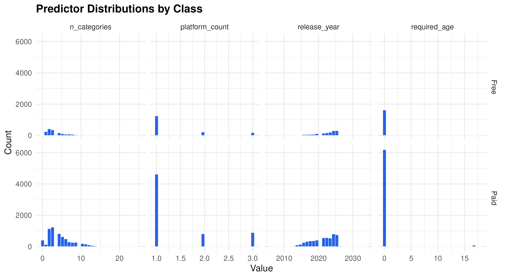
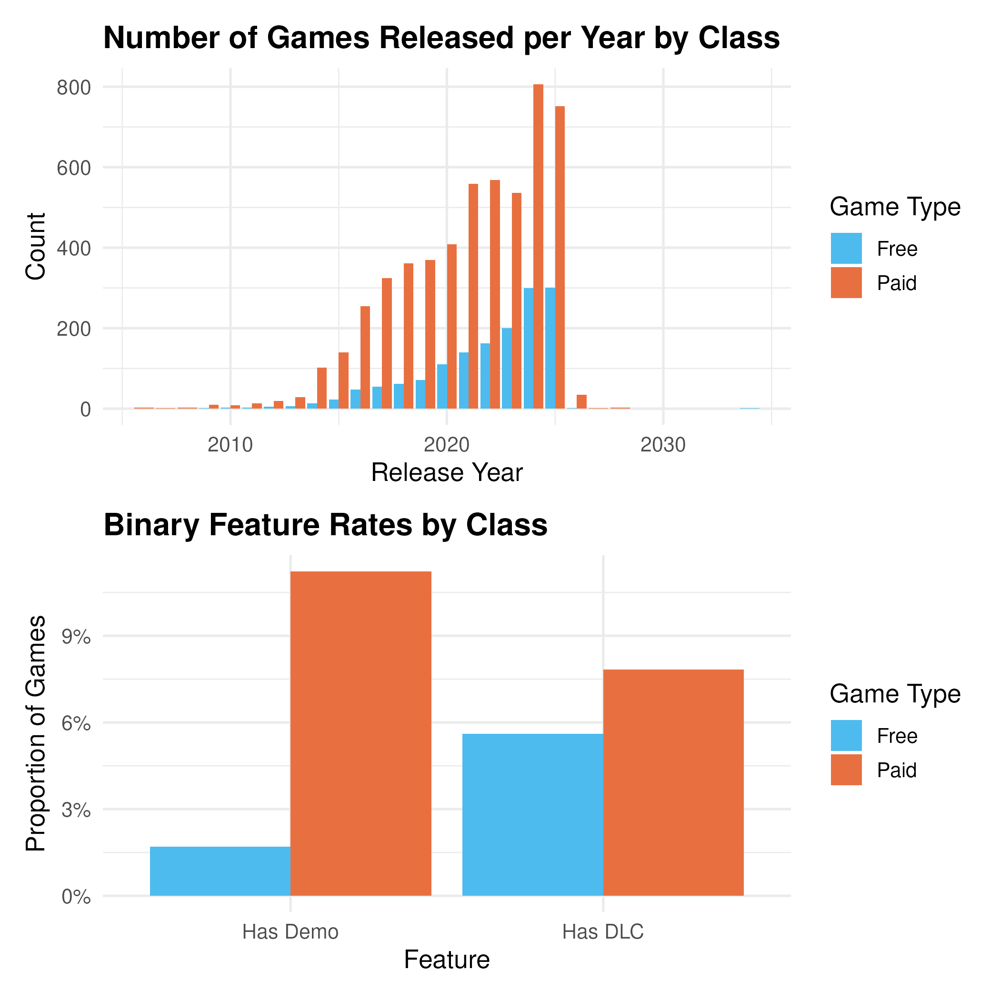
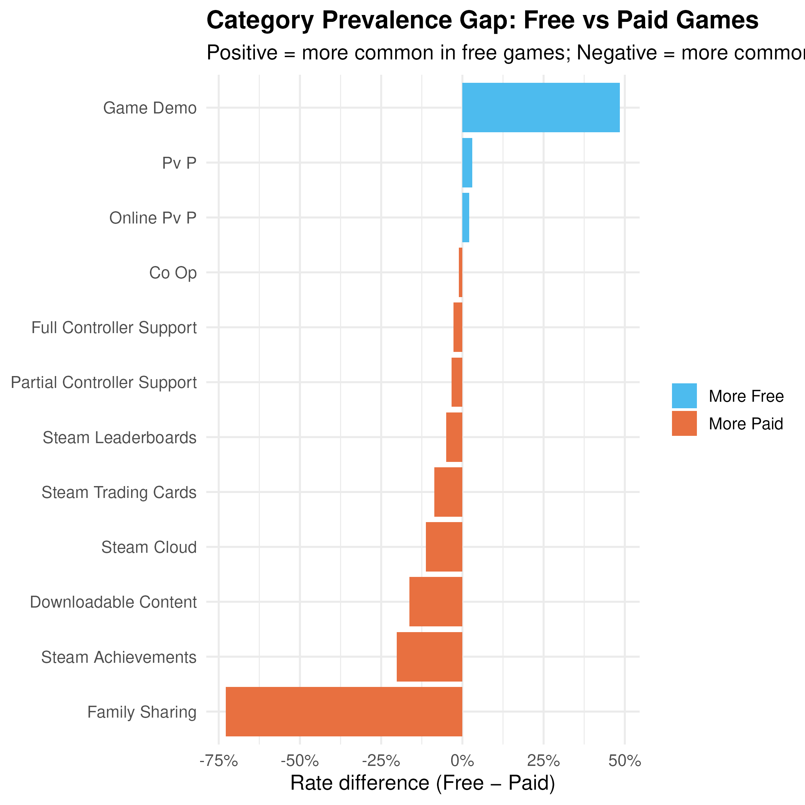
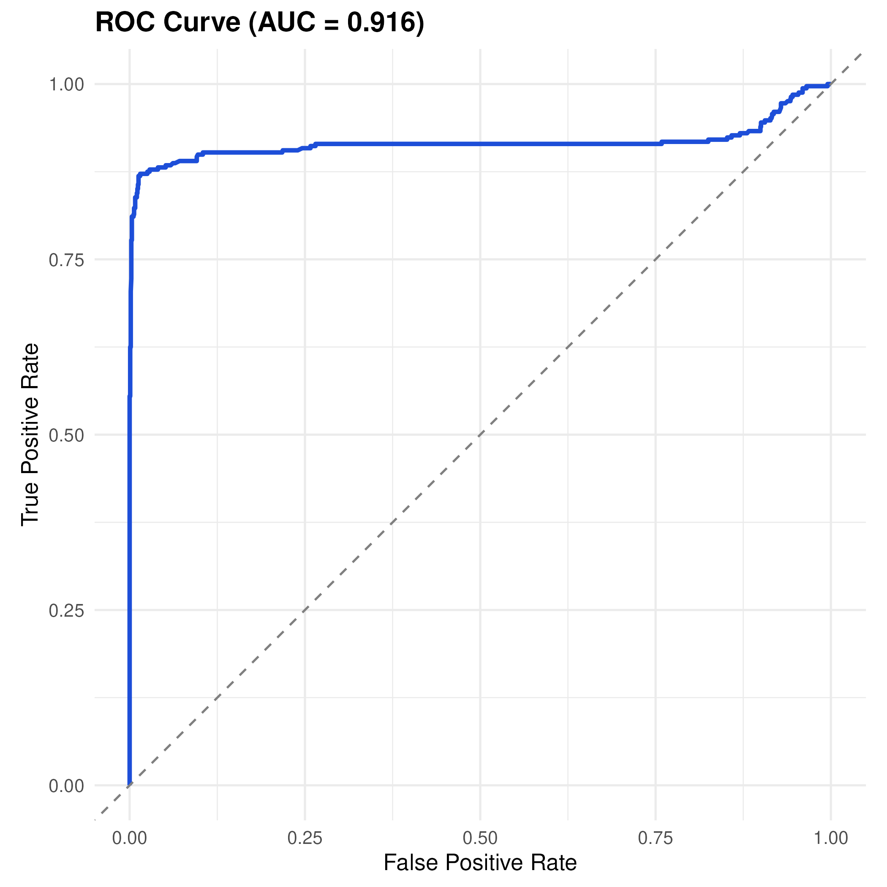
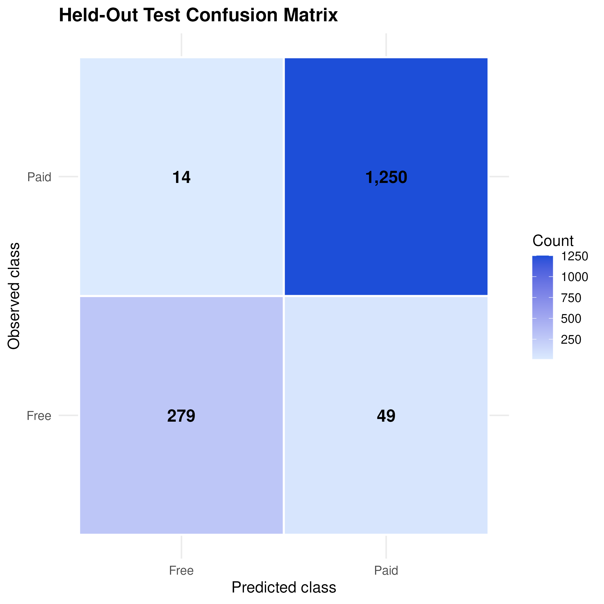

| metric | value |
|---|---|
| Baseline accuracy (majority class) | 0.7940 |
| Model accuracy | 0.9604 |
| Sensitivity (Free recall) | 0.8506 |
| Specificity (Paid recall) | 0.9889 |
| Balanced accuracy | 0.9198 |
| ROC AUC | 0.9161 |
Predicting Free vs Paid Games on Steam
Summary
This project uses machine learning to predict whether a Steam game is free-to-play or paid based on its attributes. Using a snapshot of approximately 5,000 Steam games collected in August 2025 (vintagedon (2025)), we train a cross-validated logistic regression classifier. The final model achieves 95.9% accuracy and a ROC AUC of 0.923 on the held-out test set, substantially outperforming a majority-class baseline of 79.4%.
Introduction
Steam is the world’s largest PC game distribution platform, with over 10,000 annual releases (Statista Research Department (2026)) and around 20 million daily active users (Steam (n.d.)). Being able to predict whether a game will be free or not helps developers make pre-launch pricing decisions, helps publishers evaluate projects, and helps researchers study quality signals in large content marketplaces.
The dataset used is the Steam 2025 5K Games Dataset (vintagedon (2025)): a gzip-compressed JSON snapshot of approximately 5,000 Steam game records taken on August 31, 2025. Key fields include steam_appid, name, is_free (the target variable), genres, categories, platforms, release_date, required_age, and developer.
Specifically, we ask:
- What game attributes differ most between free-to-play and paid titles?
- Can a machine learning classifier accurately distinguish free and paid games using only pre-launch observable features?
- Which features contribute most to that classification?
Methods & Results
The R programming language (R Core Team (2024)) and the following R packages were used to perform the analysis: tidyverse (Wickham et al. (2019)), caret (Kuhn (2024)), pROC (Robin et al. (2011)), janitor (Firke (2023)), lubridate (Grolemund and Wickham (2011)), scales (Wickham, Pedersen, and Seidel (2023)), patchwork (Pedersen (2024)), jsonlite (Ooms (2023)), and Quarto (Allaire et al. (2022)).
Data were loaded, cleaned, and feature-engineered using scripts/02_data-preprocessing.R. Column names were simplified, is_free was recoded as a two-level factor, platform flags were cast to logical and summed into platform_count, and the top 20 most-frequent game categories were one-hot encoded as indicator columns. Missing values were imputed with sensible defaults, keeping data loss below 10%.
Exploratory Data Analysis
The dataset is heavily imbalanced: paid games account for 79.4% of records and free games for only 20.6% (Figure 1). This means a naive majority-class classifier would already achieve ~79% accuracy, so model accuracy must be interpreted alongside sensitivity and specificity.

Figure 2 shows distributions of the four key numeric predictors. n_categories is right-skewed: most games belong to just a few categories. platform_count clusters at 1, reflecting that most titles are Windows-only. release_year rises sharply post-2015 as Steam’s catalogue expanded. required_age is concentrated at 0, as most games carry no age restriction.

Figure 3 presents further feature relationships by class. Release-year distributions are similarly shaped for both classes, but paid games dominate throughout. The binary feature panel shows that paid games are far more likely to have DLC or a demo, consistent with using demos to drive paid conversions.

Figure 4 shows the difference in category prevalence between free and paid games. Single-player games strongly skew paid, while multiplayer and Steam leaderboard games tilt slightly toward free — consistent with free-to-play titles relying on large player pools for engagement.

Modeling and Evaluation
The dataset was split 80/20 into training and test sets using stratified sampling to preserve the class ratio. A majority-class baseline — predicting “Paid” for every observation — yields 79.4% accuracy. Logistic regression was trained using caret (Kuhn (2024)) with 5-fold cross-validation optimising for ROC AUC. Only pre-launch observable features were included as predictors.
Classification metrics for the model on the held-out test set are shown in Table 1.
The model improves on the baseline by 16 percentage points. Specificity is near-perfect at 0.990, while sensitivity reaches 0.838. Cohen’s Kappa of 0.867 confirms performance well beyond chance (Cadili, Fyson, and Widmann (2015)). Balanced accuracy of 0.914 indicates the model handles both classes reasonably despite the imbalance (Silva (2024)).
In Figure 5 we show the ROC curve, which hugs the top-left corner (AUC = 0.923), confirming strong discriminative ability across all decision thresholds.

The confusion matrix in Figure 6 shows the raw prediction counts. The model correctly identifies the vast majority of paid games, while missing a smaller proportion of free games due to class imbalance.

The top 15 variable importance scores are presented in Table 2. The five most important predictors are family sharing, single-player, Steam leaderboards, multiplayer, and demo availability.
| term | Estimate | odds_ratio | Pr(>|z|) |
|---|---|---|---|
| game_typeseries | -39.319605 | 0.0000000 | 0.9951841 |
| game_typedemo | -32.975973 | 0.0000000 | 0.9943034 |
| game_typemod | -31.919148 | 0.0000000 | 0.9953210 |
| windows_supportTRUE | -16.680544 | 0.0000001 | 0.9968465 |
| cat_downloadable_contentTRUE | -15.743507 | 0.0000001 | 0.9942093 |
| game_typegame | -14.861086 | 0.0000004 | 0.9974291 |
| game_typeepisode | -14.687857 | 0.0000004 | 0.9974591 |
| game_typevideo | -13.541796 | 0.0000013 | 0.9976574 |
| game_typemusic | -12.581172 | 0.0000034 | 0.9978235 |
| cat_family_sharingTRUE | 4.646937 | 104.2651733 | 0.0000000 |
| game_typedlc | 2.728640 | 15.3120538 | 0.9995728 |
| cat_single_playerTRUE | -2.208551 | 0.1098598 | 0.0000000 |
Discussion
The logistic regression classifier achieves strong overall performance (accuracy 0.959, AUC 0.923), but the asymmetry between sensitivity (0.838) and specificity (0.990) warrants careful interpretation. The model is more reliable at identifying paid games than free ones — a consequence of the 4:1 class imbalance in the training data.
The variable importance results are counterintuitive in places. Family sharing emerges as the single strongest predictor of a game being free, yet the EDA showed that paid games have family sharing enabled more often in absolute frequency. The logistic regression coefficient captures the conditional relationship after controlling for all other variables, which can reverse marginal associations — a known consequence of multivariate adjustment.
The strong influence of the single-player category on predicting paid games aligns with industry convention: narrative or campaign-driven titles typically require a purchase, whereas free-to-play games rely on multiplayer engagement and microtransactions.
An interesting follow-up analysis would be to define multiplayer sub-categories (MOBA, MMORPG, co-op) to determine whether finer genre distinctions improve predictive power, or to extend the target variable beyond binary free/paid to capture the full pricing distribution.
References
Allaire, J. J., Charles Teague, Carlos Scheidegger, Yihui Xie, and Christophe Dervieux. 2022. “Quarto.” https://doi.org/10.5281/zenodo.5960048.
Cadili, Rodrigo, Hannah Fyson, and Moritz Widmann. 2015. “What Is Cohen’s Kappa? How and When to Use It (Plus Common Pitfalls to Avoid).” KNIME. https://www.knime.com/blog/cohens-kappa-an-overview.
Firke, Sam. 2023. “Janitor: Simple Tools for Examining and Cleaning Dirty Data.” https://CRAN.R-project.org/package=janitor.
Grolemund, Garrett, and Hadley Wickham. 2011. “Dates and Times Made Easy with lubridate.” https://CRAN.R-project.org/package=lubridate.
Kuhn, Max. 2024. “Caret: Classification and Regression Training.” https://CRAN.R-project.org/package=caret.
Ooms, Jeroen. 2023. “Jsonlite: A Simple and Robust JSON Parser and Generator for R.” https://CRAN.R-project.org/package=jsonlite.
Pedersen, Thomas Lin. 2024. “Patchwork: The Composer of Plots.” https://CRAN.R-project.org/package=patchwork.
R Core Team. 2024. R: A Language and Environment for Statistical Computing. Vienna, Austria: R Foundation for Statistical Computing. https://www.R-project.org/.
Robin, Xavier, Natacha Turck, Alexandre Hainard, Natalia Tiberti, Frédérique Lisacek, Jean-Charles Sanchez, and Markus Müller. 2011. “pROC: An Open-Source Package for R and S+ to Analyze and Compare ROC Curves.” BMC Bioinformatics 12: 77. https://doi.org/10.1186/1471-2105-12-77.
Silva, Caina Max Couto de. 2024. “A Data Scientist’s Guide to Balanced Accuracy.” Train in Data. https://www.blog.trainindata.com/a-data-scientists-guide-to-balanced-accuracy/.
Statista Research Department. 2026. “Number of Games Released on Steam Worldwide from 2004 to 2025.” Statista. https://www.statista.com/statistics/552623/number-games-released-steam/.
Steam. n.d. “Charts Overview.” https://store.steampowered.com/charts/.
vintagedon. 2025. “Steam 2025 5K Games Dataset.” GitHub. https://github.com/vintagedon.
Wickham, Hadley, Mara Averick, Jennifer Bryan, Winston Chang, Lucy D’Agostino McGowan, Romain François, Garrett Grolemund, et al. 2019. “Welcome to the tidyverse.” Journal of Open Source Software 4 (43): 1686. https://doi.org/10.21105/joss.01686.
Wickham, Hadley, Thomas Lin Pedersen, and Dana Seidel. 2023. “Scales: Scale Functions for Visualization.” https://CRAN.R-project.org/package=scales.